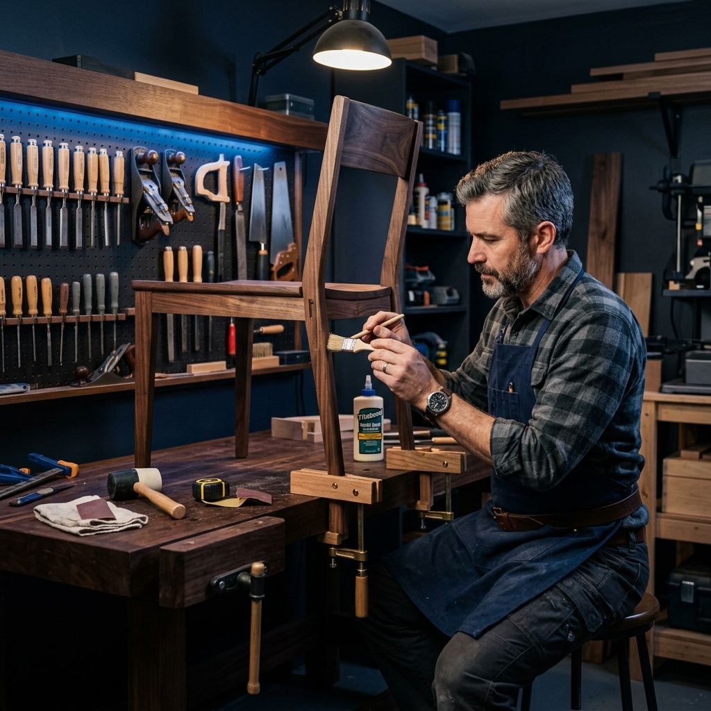

Save money and extend the life of your favorite pieces. Serving Jesmond, Gosforth, Heaton, Gateshead, and the rest of Tyneside.

Why spend a fortune on new items when we can breathe life back into the ones you have? We recondition, reinforce, and repair damaged furniture, restoring both its functionality and beautiful aesthetic appeal.
We choose the right fix for the right furniture, using matching finishes and quality materials for repairs that look seamless and last longer.
Take a few clear pictures of the broken hinge, scratch, or wobbly leg and send them to us on WhatsApp. We'll give you a no-obligation quote instantly.
Message Us Now